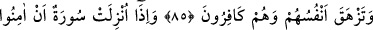
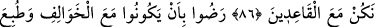

TEBÜK GAZVESİ’NDEN
GERİ KALANLAR
81. Geride bırakılanlar, Allah Rasûlü’nün hilâfına yerlerinde oturup kalmalarına
sevindiler, mallarıyla ve canlarıyla Allah yolunda cihad etmekten hoşlanmadılar:
“Sıcakta sefere çıkmayın!” dediler. De ki: “Cehennemin ateşi daha sıcaktır!”
Keşke anlasalardı!
82. Artık kazandıkları işlere karşılık az gülsünler, çok ağlasınlar!
83. “Eğer Allah, seni onlardan bir topluluğun yanına döndürür de (onlar savaşa)
çıkmak için senden izin isterlerse, de ki: “Aslâ benimle çıkmayacaksınız, benimle
beraber düşmanla savaşmayacaksınız. Siz ilk seferde oturmağa râzı olmuştunuz,
öyle ise geri kalanlarla beraber oturun.”
84. Ve onlardan ölen birinin üzerine aslâ namaz kılma, onun kabri başında da